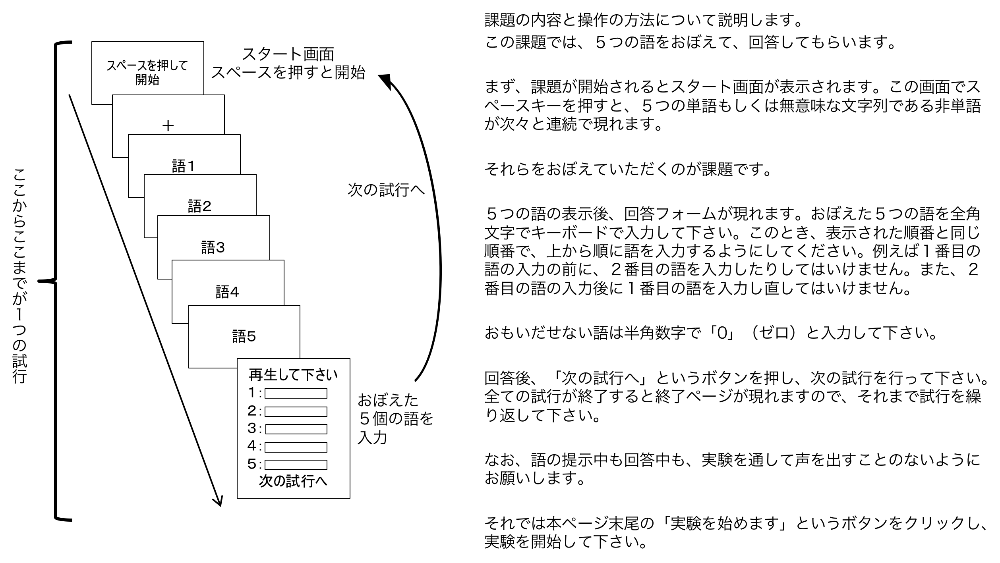

<!-- Copyright (c) 2020 Yuki Tanida
This software is released under the MIT License, see ../LICENSE -->
<!-- This demo is for Japanese versison of lexical/semantic effect on shor-term memory (e.g., Hulme, et al., 1991). You can try immediate serial recall of 5-word or 5-nonword list. Both word and nonword have four morae. Familiarity of word stimuli are more than six (retrieved from Amano & Kondo, 1999). I calculated, for each word/nonwor, average token frequency of single-morae composing word/nonword for phonological familiarity for each word/nonword. For this calculation, token frequency of single-mora was retrieved from Tamaoka and Makioka (2003). Average phonological familiarity in word pool (M = 6.44, SD = 0.12) and in nonword pool (M = 6.41, SD = 0.16) did not differ significantly (t(48) = 0.92, p = .37). At the end of this demo, you can save csv data file locally.
(by Yuki Tanida https://twitter.com/yukitanida)

References
Amano, S., & Kondo, T. (1999). NTT database series, Nihongo-no Goitokusei: Lexical properties of Japanese. Tokyo: Sanseido.
Hulme, C., Maughan, S., & Brown, G. D. (1991). Memory for familiar and unfamiliar words: Evidence for a long-term memory contribution to short-term memory span. Journal of memory and language, 30(6), 685-701.
Tamaoka, K., & Makioka, S. (2004). Frequency of occurrence for units of phonemes, morae, and syllables appearing in a lexical corpus of a Japanese newspaper. Behavior Research Methods, Instruments, & Computers, 36(3), 531-547.
 ----------------------------------------------->
<!DOCTYPE html>
<html>
	<head>
		<title>Hulmeetal1991Demo</title>
		<meta charset="utf-8">
	  <meta name="viewport" content="width=device-width">

		<!-- Prepare jsPsych plugin ----------------------------------------------->
		<script src="./jspsych/jspsych.js"></script>
		<script src="./jspsych/plugins/jspsych-fullscreen.js"></script>
		<script src="./jspsych/plugins/jspsych-instructions.js"></script>
		<script src="./jspsych/plugins/jspsych-survey-text.js"></script>
    <script src="./jspsych/plugins/jspsych-survey-multi-choice.js"></script>
		<script src="./jspsych/plugins/jspsych-html-keyboard-response.js"></script>
		<link href="./jspsych/css/jspsych.css" rel="stylesheet" type="text/css"></link>


		<!-- Setting -------------------------------------------------------------->
		<script>
			// cm for a letter
			var cmPerLetter = 1;

			// Get participant ID, date , and time ---------------------------------
			// prepare container for participant information
			var par_info = [];

			// random number ID
			var nums = "01234567890123456789";
			var numsLength = nums.length;
			var r_num = "";
			for(var i=0; i<5; i++){
			  r_num += nums[Math.floor(Math.random()*numsLength)];
			}
			par_info.id = r_num;

			// date & time
			var time_date = new Date();
			var year   = time_date.getFullYear();
			var month  = ("0"+(time_date.getMonth()+1)).slice(-2);
			var date   = ("0"+time_date.getDate()).slice(-2);
			var hour   = ("0"+time_date.getHours()).slice(-2);
			var minute = ("0"+time_date.getMinutes()).slice(-2);
			var second = ("0"+time_date.getSeconds()).slice(-2);
			par_info.time = year + month + date + hour + minute + second;
	  </script>

		<!-- Set font for Japenese ------------------------------------------------>
		<style>
			div {
				/* Use other monospace fonts if fail to install M+1m */
				font-family: Osaka-mono', 'Osaka−等幅', 'MS Gothic', 'ＭＳ ゴシック', monospace;
				line-height: 1.6em;
				text-align: center;
			}
		</style>
	<body></body>


	<!--------------------------------------------------------------------------->
	<!-- jsPsych code ----------------------------------------------------------->
  <!--------------------------------------------------------------------------->
	<script>

		// prepare timeline --------------------------------------------------------
		var timeline = [];

		// full screen -------------------------------------------------------------
		var fullscreen = {
			type: 'fullscreen',
			message: "<div style='text-align:left; padding:20px; font-size:32px; line-height:200%;'>" +
			'これからwebブラウザ（Google ChromeやSafariなどのwebページ閲覧ソフト）を用いて実験課題に取り組んでいただきます。' +
			'まず、ブラウザを全画面表示にする必要があります。' +
			'下のボタンをクリックし、ブラウザを全画面表示に切り替えて下さい。<br<br><br></div>',
			button_label: "全画面表示に切り替え",
			fullscreen_mode: true,
		};
		timeline.push(fullscreen);

		// subject background information-------------------------------------------
		var studentID_age = {
				type: 'survey-text',
				questions: [
				{prompt: "<div style='color:black; text-align:left;'>\n学籍番号を半角数字で入力してください。</div>", columns: 15, required: true, name: 'studentID'},
				{prompt: "<div style='color:black; text-align:left;'>\n年齢を半角数字で入力してください。</div>", columns: 5, required: true, name: 'age'},
				],
				button_label: '次へ',
				on_finish: function(data) {
					par_info.studentID = JSON.parse(data.responses).studentID;
					par_info.age = JSON.parse(data.responses).age;
			  }
		};
		var gender = {
				type: 'survey-multi-choice',
				questions: [
				{prompt: "<div style='color:black; text-align:left;'>性別を選択してください。</div>", options: ['男性', '女性', '答えたくない'], required: true, horizontal: true, name: 'gender'},
				],
				button_label: '次へ',
				on_finish: function(data) {
				par_info.gender = JSON.parse(data.responses).gender;
			}
		};
		timeline.push(studentID_age, gender);

		// instruction -------------------------------------------------------------
		var instruction = {
			type: "instructions",
			pages: ["</img></div>"],
			key_forward: false,
			key_backward: false,
			allow_backward: false,
			allow_keys: false,
			show_clickable_nav: true,
			button_label_next: ['実験を始めます'],
		};
		timeline.push(instruction);


	// Trial start from here -----------------------------------------------------

		// startingPage ------------------------------------------------------------
		var startingPage = {
			type: "html-keyboard-response",
			stimulus: function(){
				var html = "<div style='font-size:28px;'>スペースを押して開始</div>";
				return html;
			},
			choices: ["space"],
		};

		// fixation ----------------------------------------------------------------
		var fixation = {
			type: "html-keyboard-response",
			stimulus: function(){
				var html = "<div style='font-size:28px;'>＋</div>";
				return html;
		},
			trial_duration: 500,
			stimulus_duration: 500,
		};

		// blank -------------------------------------------------------------------
		var blank = {
			type: "html-keyboard-response",
			stimulus: "<div></div>",
			trial_duration: 500,
		};

		// stimulus ----------------------------------------------------------------
		var trial_types = [
			{item1: 'ジンブツ', item2: 'オニギリ', item3: 'トランプ', item4: 'メイブツ', item5: 'マゴコロ', cond: 'w'},
			{item1: 'ヤジルシ', item2: 'シリトリ', item3: 'ケイザイ', item4: 'バンゴウ', item5: 'センベイ', cond: 'w'},
			{item1: 'シノケム', item2: 'ヘロタシ', item3: 'シクナヘ', item4: 'マフケノ', item5: 'ロヌマケ', cond: 'n'},
			{item1: 'メザマシ', item2: 'アオゾラ', item3: 'ゼンコク', item4: 'ケツエキ', item5: 'ハナヨメ', cond: 'w'},
			{item1: 'リケムナ', item2: 'メフリコ', item3: 'ケマヌヒ', item4: 'メノツハ', item5: 'ヒタケモ', cond: 'n'},
			{item1: 'タマネギ', item2: 'ヒラガナ', item3: 'メグスリ', item4: 'オレンジ', item5: 'エプロン', cond: 'w'},
			{item1: 'モニラテ', item2: 'ツシマホ', item3: 'ヘシタコ', item4: 'ヘムサキ', item5: 'シナトク', cond: 'n'},
			{item1: 'ヘマツノ', item2: 'メコヒサ', item3: 'ミヘツコ', item4: 'ハスレミ', item5: 'スケヒタ', cond: 'n'},
			{item1: 'チヘナル', item2: 'ツマキネ', item3: 'リサテフ', item4: 'ノミクレ', item5: 'メキロス', cond: 'n'},
			{item1: 'カミノケ', item2: 'カネモチ', item3: 'ムラサキ', item4: 'マンゲツ', item5: 'ビタミン', cond: 'w'},
		];
		// randomize list order
		// trial_types = jsPsych.randomization.repeat(trial_types, 1);

		// Stimulus list -----------------------------------------------------------
		// item1
		var item1 = {
			type: "html-keyboard-response",
			stimulus: function(){
				var html = "<div style='font-size:28px;'>" + jsPsych.timelineVariable('item1', true) + "</div>";
				return html;
			},
		  choices: jsPsych.NO_KEYS,
			trial_duration: 2000,
			stimulus_duration: 1000,
		};

		// item2
		var item2 = {
			type: "html-keyboard-response",
			stimulus: function(){
				var html = "<div style='font-size:28px;'>" + jsPsych.timelineVariable('item2', true) + "</div>";
				return html;
			},
		  choices: jsPsych.NO_KEYS,
			trial_duration: 2000,
			stimulus_duration: 1000,
		};

		// item3
		var item3 = {
			type: "html-keyboard-response",
			stimulus: function(){
				var html = "<div style='font-size:28px;'>" + jsPsych.timelineVariable('item3', true) + "</div>";
				return html;
			},
		  choices: jsPsych.NO_KEYS,
			trial_duration: 2000,
			stimulus_duration: 1000,
		};

		// item4
		var item4 = {
			type: "html-keyboard-response",
			stimulus: function(){
				var html = "<div style='font-size:28px;'>" + jsPsych.timelineVariable('item4', true) + "</div>";
				return html;
			},
		  choices: jsPsych.NO_KEYS,
			trial_duration: 2000,
			stimulus_duration: 1000,
		};

		// item5
		var item5 = {
			type: "html-keyboard-response",
			stimulus: function(){
				var html = "<div style='font-size:28px;'>" + jsPsych.timelineVariable('item5', true) + "</div>";
				return html;
			},
		  choices: jsPsych.NO_KEYS,
			trial_duration: 2000,
			stimulus_duration: 1000,
		};

		// recall ------------------------------------------------------------------
		var trialCounter = 0;
		var recall = {
				type: 'survey-text',
				questions: [
				{prompt: "<div>再生して下さい。\n\n</div><div style='color:black; text-align:left;'>１：</div>", columns: 10, required: true, name: 'recall1'},
				{prompt: "<div style='color:black; text-align:left;'>\n２：</div>", columns: 10, required: true, name: 'recall2'},
				{prompt: "<div style='color:black; text-align:left;'>\n３：</div>", columns: 10, required: true, name: 'recall3'},
				{prompt: "<div style='color:black; text-align:left;'>\n４：</div>", columns: 10, required: true, name: 'recall4'},
				{prompt: "<div style='color:black; text-align:left;'>\n５：</div>", columns: 10, required: true, name: 'recall5'},
				],
				button_label: '次の試行へ',
				on_finish: function(data) {
					trialCounter++;
					output_node_id = jsPsych.currentTimelineNodeID(); // use grobally
					data.trialNo = trialCounter;
					data.item1 = jsPsych.timelineVariable('item1', true);
					data.item2 = jsPsych.timelineVariable('item2', true);
					data.item3 = jsPsych.timelineVariable('item3', true);
					data.item4 = jsPsych.timelineVariable('item4', true);
					data.item5 = jsPsych.timelineVariable('item5', true);
					data.cond  = jsPsych.timelineVariable('cond', true);
					data.recall1 = JSON.parse(data.responses).recall1;
					data.recall2 = JSON.parse(data.responses).recall2;
					data.recall3 = JSON.parse(data.responses).recall3;
					data.recall4 = JSON.parse(data.responses).recall4;
					data.recall5 = JSON.parse(data.responses).recall5;
			}
		};

		// Set phases of trial -----------------------------------------------------
		var test = {
			timeline:[startingPage, fixation, blank, item1, item2, item3, item4, item5, recall],
			timeline_variables: trial_types
		}
		timeline.push(test);

		// ending ------------------------------------------------------------------
		var thankyou = {
			type: "html-keyboard-response",
			stimulus: "<div style='text-align:left; color:black; font-size:28px; line-height:200%;'>" +
			"<p>お疲れさまでした。</p>" +
			"<p>これで実験は終了です。これから全画面表示が解除されると同時に、実験データが記録されたCSVファイルがダウン"+
			"ロードされます。ブラウザの設定によっては「保存」もしくは「許可」という選択肢が現れます。その際は「保存・許可」を選"+
			"択して下さい。そのような表示のない方はファイルが自動的に保存されます。<br><br>"+
			"全画面表示の解除はＱキーです。Ｑキーを押したらダウンローが始まります。ダウンロードが済んだらブラウザを閉じ"+
			"ていただいて構いません。それではＱキーを押してください。<br>"+
			"このたびは研究にご参加いただきどうもありがとうございました。</p></div>",
			choices: ["q"],
		};
		timeline.push(thankyou);

		// exit fullscreen mode
		timeline.push({
			type: 'fullscreen',
			fullscreen_mode: false
		});

		// start experiment --------------------------------------------------------
		// preload img file
		var images = ['Hulmeetal1991_instruction.png'];

		jsPsych.init({
			timeline: timeline,
			preload_images: images,
			on_finish: function(data) {

				// Add ID, time, platform in data
				jsPsych.data.addProperties(par_info);

				var data_out = jsPsych.data.get().filterCustom(function(data){
					return data.trialNo > 0;
				});
				data_out.localSave('csv', 'Hulmeetal1991_'+ par_info.id +'.csv');
			},
		});
	</script>
</html>
